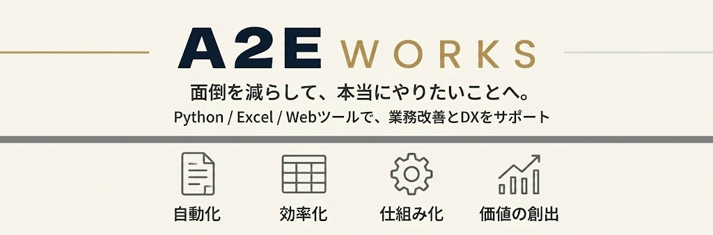

ツール
IDおそうじ
メールから、忘れていたネットサービスの登録を見つけて、片づけをサポートするブラウザアプリ。漏洩のお知らせが届いていたものから順に、パスワード変更や退会の入口を案内します(手続きは各サービスの公式サイトで)。メールは外部に送信されません。パソコン専用です(スマホでは使えません)。
メール公式チェッカー（無料）
Gmailで開いたメールが公式の送信元からかを判定するChrome拡張機能。本文のリンクはロックされ、押しても開かずに行き先だけを表示します。メールは外部に送信されません。
資格挑戦記
電気・設備の資格に挑戦しながら、AIと一緒に作った勉強用ツールを紹介していきます。
乙種第4類危険物取扱者
勉強に使ったツールと、合格までの記録。準備中です。
第二種電気工事士
筆記・技能の勉強に使ったツールと、挑戦の記録。準備中です。
最新の記事
考え方
ローカルで完結
書類の中身をサーバーに送りません。処理はブラウザの中だけで行います。
自分で確認できる
読み取り結果は必ず目で確認してから確定。間違いをそのまま通しません。
買い切り
月額課金はありません。一度の購入で使い続けられます。